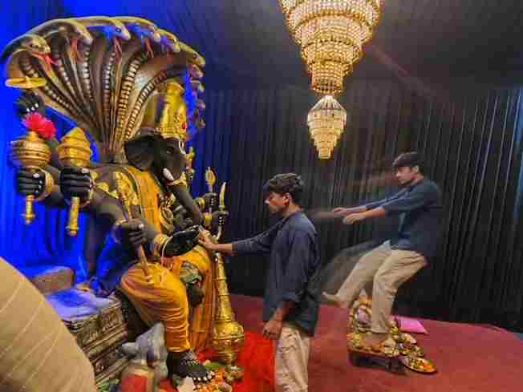

Create a beautiful devotional video featuring Ganpati Bappa with the help of AI. The Trending Ganpati Bappa AI Video Editing Prompt can transform a simple reference image into a cinematic and visually attractive AI video with realistic movement, glowing lights, festive decorations, and a devotional atmosphere. This type of AI video is perfect for Instagram Reels, YouTube Shorts, Facebook Reels, and Ganesh Chaturthi content. You can use your own photo, a Ganpati Bappa image, or a suitable reference image depending on the video concept you want to create.
What Is Ganpati Bappa AI Video Editing?
Ganpati Bappa AI Video Editing is a creative way to turn a static image into a moving devotional video using an AI video generation tool. Instead of manually creating every animation and visual effect, you can provide an image and describe the desired movement, camera angle, lighting, background, and atmosphere through a detailed prompt. The AI then generates a video based on those instructions. You can create different styles, such as a cinematic Ganpati darshan scene, festive pandal atmosphere, glowing devotional visuals, or a dramatic temple-inspired presentation.
Trending Ganpati Bappa AI Video Editing Prompt
Use the following prompt with your Ganpati Bappa reference image:
Want more awesome prompts?
Join our community and get the latest viral prompts daily.
Follow on Instagram
How to Create Ganpati Bappa AI Video
Creating this AI video on Flow AI is very easy. Just follow these simple steps:
- Open Flow AI and sign in to your account.
- Start a new project and upload your own image
- Copy the Ganpati Bappa AI Video Editing Prompt from this article.
- Paste the video prompt into the Flow AI prompt box.
- Click the Generate button and wait for your AI video.
- Preview the generated video and check the overall result.
- Download your final Ganpati Bappa AI video and share it.
Choose a Clear Ganpati Bappa Reference Image
The reference image plays an important role in the final AI video. Try to use a clear, high-resolution image where the complete Ganpati Bappa idol is visible and the important details can be easily recognized. Images with good lighting and a clean composition can help the AI understand the subject more accurately. If your reference image includes a decorated pandal, flowers, lights, or a specific background, you can mention those elements in the prompt if you want to maintain a similar visual atmosphere. A strong reference image can make the generated video look more consistent and detailed.
Create a Cinematic Devotional Atmosphere
A beautiful Ganpati AI video does not need complicated movement. Slow camera motion combined with warm lighting and subtle environmental animation can create a peaceful cinematic effect. You can add gentle flower petals, glowing decorative lights, incense smoke, and soft particles to make the scene feel more alive. The main focus should remain on Ganpati Bappa, while the background supports the devotional atmosphere. A slow zoom-in, gentle camera push, or smooth side movement can work well for short-form videos and can make a simple image feel much more dynamic.
Add Festive Decorations and Lighting
Festive decorations can make your Ganpati Bappa AI video more attractive. You can describe elements such as marigold flowers, decorative lights, diyas, traditional fabric, floral arrangements, and a beautifully decorated pandal. Golden and warm lighting can create a peaceful devotional mood, while subtle background blur can keep attention on the idol. Avoid adding too many complicated elements in one prompt because excessive details may cause unwanted changes in the generated scene. Keep the main subject clear and use decorations as supporting visual elements.
Tips for Better Ganpati AI Video Results
For better results, always start with a sharp and high-quality reference image. Clearly mention which elements should remain unchanged, especially the idol’s face, crown, ornaments, clothing, colors, and overall structure. Keep the requested movement subtle and realistic instead of asking for several complicated actions at the same time. If the AI changes the idol’s appearance, simplify the prompt and repeat the instruction to preserve the original design. You can also generate multiple versions and select the one with the most natural camera movement, consistent details, and beautiful lighting.
Make Your Ganpati Reel More Attractive
After generating the AI video, you can add the finishing touches using your preferred editing application. Choose suitable devotional music, add gentle transitions, and adjust the brightness or contrast if necessary. You can also combine multiple Ganpati AI clips to create a short devotional montage. Keep the editing simple so the main focus stays on Ganpati Bappa. For Instagram Reels, YouTube Shorts, and Facebook Reels, a vertical video format can provide a suitable full-screen presentation. Always preview the final edit before exporting to check the timing, visual quality, and overall presentation.
Why Create Ganpati Bappa AI Videos?
Ganpati Bappa AI videos provide a creative way to combine devotional themes with modern AI video generation. They can be used for festival greetings, social media posts, devotional Reels, creative edits, and personal celebrations. Ganesh Chaturthi is dedicated to Lord Ganesha and is traditionally observed as his birth anniversary. AI tools allow creators to present this familiar devotional theme through cinematic visuals while experimenting with different backgrounds, lighting styles, camera movements, and festive environments.
Overall
The Trending Ganpati Bappa AI Video Editing Prompt gives you an easy way to turn a Ganpati Bappa image into a beautiful cinematic devotional video. With a clear reference image and carefully written instructions, you can create realistic camera movement, glowing lights, festive decorations, subtle atmospheric effects, and a peaceful devotional presentation. Try different reference images and visual environments to create your own unique style. Before sharing the final video, check the idol details and make sure the generated movement looks natural. I hope this guide helps you create a beautiful Ganpati Bappa AI video for your social media audience.